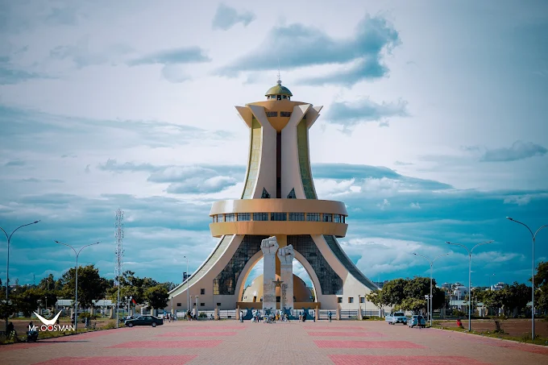

DESCRIPTION DU MONUMENT DES HEROS NATIONAUX
Le Monument des Héros Nationaux, également surnommé le « Panthéon des martyrs », est l'un des emblèmes architecturaux majeurs de Ouagadougou. Situé à l'extrémité sud de l'avenue Pascal Zavattiero dans le quartier moderne de Ouaga 2000, cet ouvrage imposant rend hommage aux défenseurs de la patrie et aux victimes des luttes pour la liberté et la démocratie au Burkina Faso.
- 📐Dimensions et structure technique
- 🇧🇫 Une symbolique culturelle profonde
- Les 4 piliers de soutien
- La calebasse inférieure (inversée)
- La calebasse supérieure (vers le haut)
- 🏃 Un espace de vie et de recueillement
Hauteur : L'édifice culmine à 55 mètres de haut, ce qui le rend visible depuis de nombreux quartiers de la capitale.Poids et matériaux : La structure pèse environ 8 000 tonnes, bâtie avec près de 3 000 m³ de béton armé et 300 tonnes d'acier.L'anneau central : À mi-hauteur, un immense anneau relie les piliers, abritant le musée de l'histoire politique du pays.
Conçu par l'architecte Simon Cafou, chaque élément architectural porte un message fort lié aux traditions africaines et à l'histoire nationale :
Ils représentent les quatre étapes majeures de la construction politique du Burkina Faso : l'Indépendance, la République, la Révolution et la Démocratie.
Tournée vers le sol, elle symbolise l'hommage funéraire, le respect envers les ancêtres et le sacrifice des héros tombés pour la patrie.
Orientée vers le ciel, elle est conçue pour symboliser la paix, le partage, la fraternité et l'union retrouvée du peuple.
L'esplanade qui entoure le monument sert de cadre aux commémorations officielles (comme l'anniversaire de l'insurrection populaire des 30 et 31 octobre). C'est également un lieu très prisé par les Ouagalais pour la promenade, la photographie au coucher du soleil et les séances de sport en fin de journée.
HISTORIQUE DU MONUENT DES HEROS NATIONAUX
L'histoire du Monument des Héros Nationaux s'inscrit dans la volonté de l'État burkinabè de créer un lieu central pour honorer la mémoire de ses citoyens illustres et commémorer les tournants politiques majeurs du pays.
- La genèse sous la IVe République (1998 - 2004)
- L'institutionnalisation de la mémoire (2009)
- Le tournant de l'Insurrection Populaire (2014)
- Un symbole vivant des commémorations actuelles
En 1998, le président Blaise Compaoré et son gouvernement décident de doter le pays d'un grand monument commémoratif. Le projet est confié à l'architecte burkinabè Simon Cafou. Les autorités choisissent le quartier en pleine expansion de Ouaga 2000 pour y ériger cette structure moderne. Après plusieurs années de chantier technique complexe (nécessitant l'injection de milliers de tonnes de béton), l'édifice de 55 mètres est achevé en 2004.
En novembre 2009, L'Assemblée nationale adopte officiellement la loi relative au statut de « Héros national ». Le site de Ouaga 2000 est formellement désigné pour abriter le Panthéon des martyrs. Il devient le lieu officiel où l'État doit inhumer ou honorer les personnes ayant rendu des services exceptionnels à la nation.
Le Monument des Héros Nationaux change de dimension dans le coeur des Burkinabè après l'insurrection populaire historique qui a entrainé la mort de plusieurs dizaines de manifestants. Il n'est plus seulement perçu comme un projet d'État, mais comme le sanctuaire des « martyrs de l'insurrection ». Les autorités de la Transition y organisent une cérémonie d'hommage national pour graver la mémoire de ces nouveaux héros dans l'histoire du pays le 15 mai 2015.
Chaque 31 octobre, le monument est le point de ralliement des cérémonies officielles de dépôt de gerbes de fleurs en mémoire des victimes des crises politiques et des soldats tombés pour la patrie. Il demeure aujoud'hui le symbole de la résistance populaire et de l'unité nationale face aux défis contemporains du Burkina Faso.
En conclusion, ce monument des héros nationaux constitue un symbole fort de mémoire, de reconnaissance et de patriotisme. Il rend hommage aux femmes et aux hommes qui ont consacré leur vie à la défense des valeurs, de la liberté et de l'unité de la nation. Au-delà de son importance historique, il rappelle aux générations présentes et futures les sacrifices consentis pour le développement et la préservation du pays. Ainsi, ce monument demeure un lieu de souvenir, d'inspiration et de transmission des idéaux nationaux.
- Emplacement: situé au sud de Ouagadougou
- Horaires: Ouvrables 24h/24 et 7j/7
- Accès: Tous publics
- Géolocalisation: Voir l'emplacement sur Google Maps